Bildbank – 27 färdiga undervisningsfigurer
Figurerna finns i veckopresentationerna och i en separat redigerbar PowerPoint. Klicka på en bild för full storlek. Färger visar funktion; symboler och ledningar kan redigeras i PowerPoint. Principbilderna är undervisningsmodeller.
Fotografier av verkliga komponenter, med originalfiler och public domain-licenser
Sluten och bruten krets
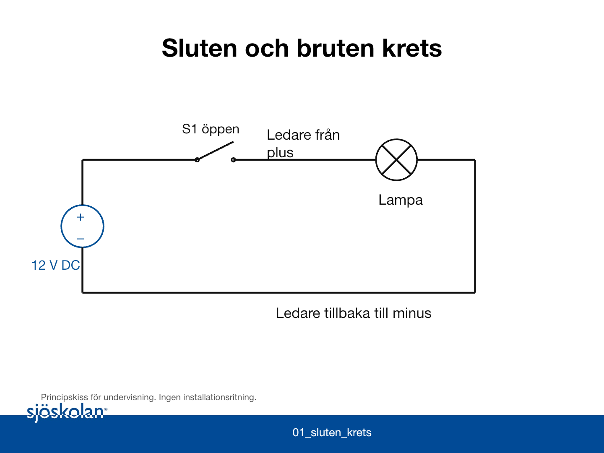
Följ källans plusanslutning, plusledaren, S1, lampan och återledaren till källans minusanslutning. En återledare är den del av den normala strömvägen som går tillbaka till källan. Den är inte automatiskt neutralledare, skyddsledare eller skrov. Öppen S1 bryter lastströmmen i modellen, men spänning kan finnas över den öppna kontakten.
Fråga: Varför kan det finnas spänning när strömmen är noll?
Arbetslampa med skadad sladd
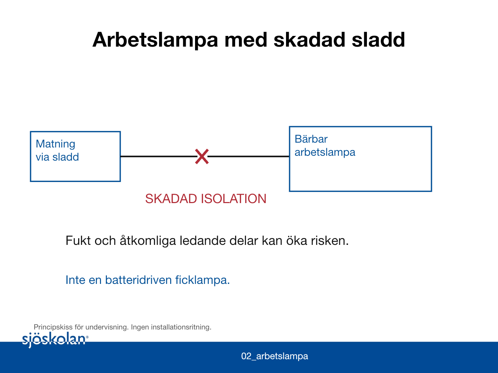
Detta är en bärbar arbetslampa som får el via en sladd. Fallbeskrivningen gäller en skadad sladd på fuktigt däck. Vi behöver inte återskapa ett verkligt fel för att analysera risk. Ficklampa betyder här en separat batteridriven produkt.
Fråga: Vilka två risker behöver hanteras samtidigt?
Vanliga komponenter och symboler
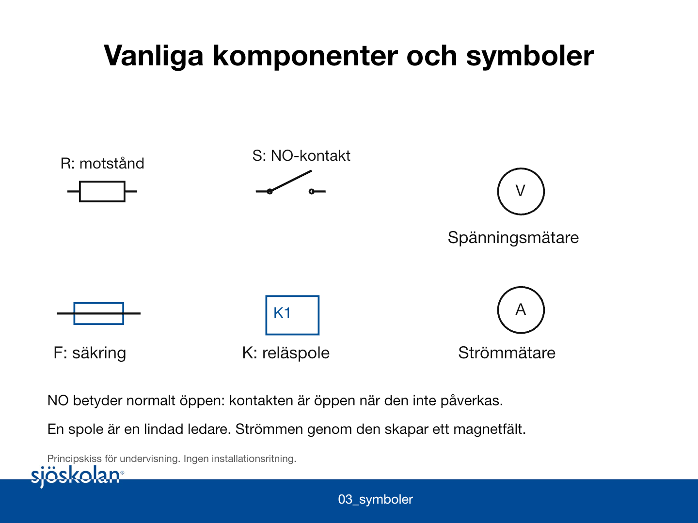
Symbolerna visar funktion, inte komponentens utseende. R är en resistans, F ett överströmsskydd, S en kontakt och K en elektromagnetisk manöverfunktion. Verklig märkning och terminaler läses i utrustningens dokumentation.
Fråga: Vilken komponent manövrerar och vilken skyddar?
En brytare bryter inte alltid allt
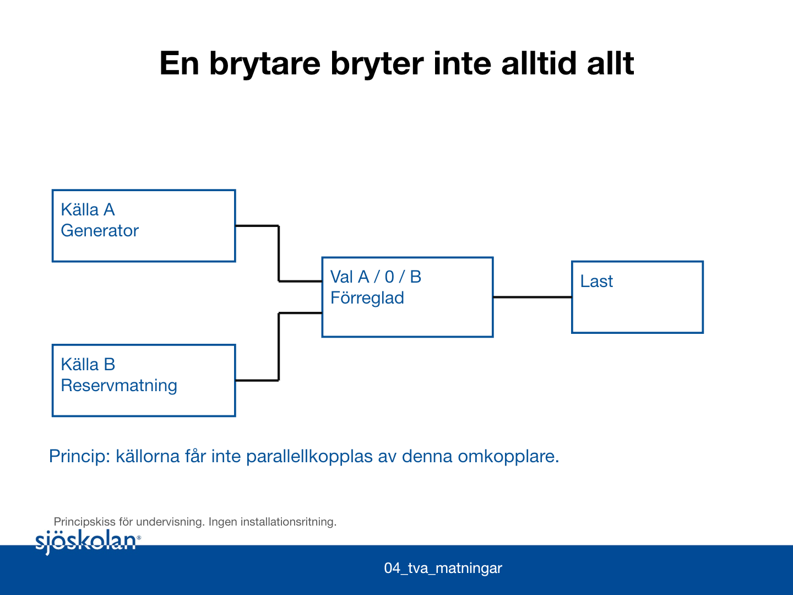
Källorna visas separat. En mekaniskt eller elektriskt förreglad omkopplarfunktion väljer en källa i taget i detta exempel. Identifiera ändå alla källor innan arbete. Skissen är inte en kopplingsorder för parallellkörning.
Fråga: Vilka uppgifter behövs innan arbetsområdet kan förklaras spänningslöst?
Spänning parallellt, ström i serie
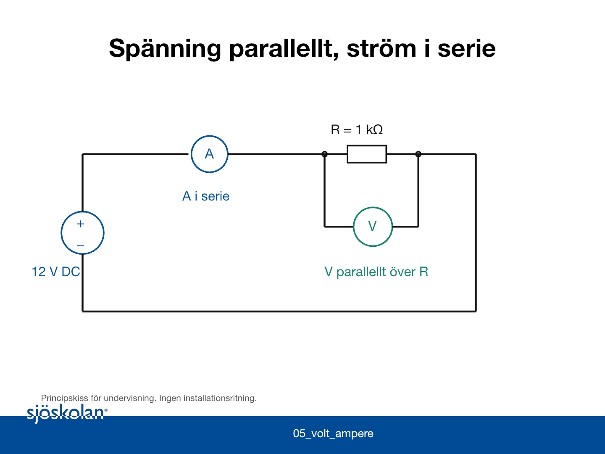
Amperemetern ingår i huvudströmvägen och voltmetern ligger mellan lastens anslutningar. Rita inte in A över källan. Instrumentbyte och omkoppling på labben sker frånskilt enligt stationens instruktion.
Fråga: Vilken anslutning kan kortsluta källan?
Resistansmätning på frånskild krets
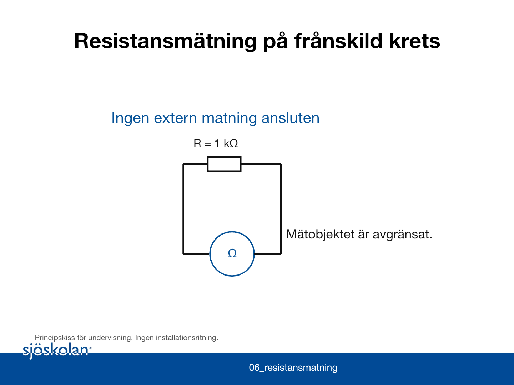
Resistansmätaren använder sin egen mätprincip. Kretsen ska vara frånskild och lagrad energi hanterad. Parallella vägar kan påverka mätvärdet. Figuren visar ett isolerat motstånd, inte en tillkopplad källa.
Fråga: Varför kan en resistans bli lägre än komponentens märkning?
Seriekrets med mätpunkter
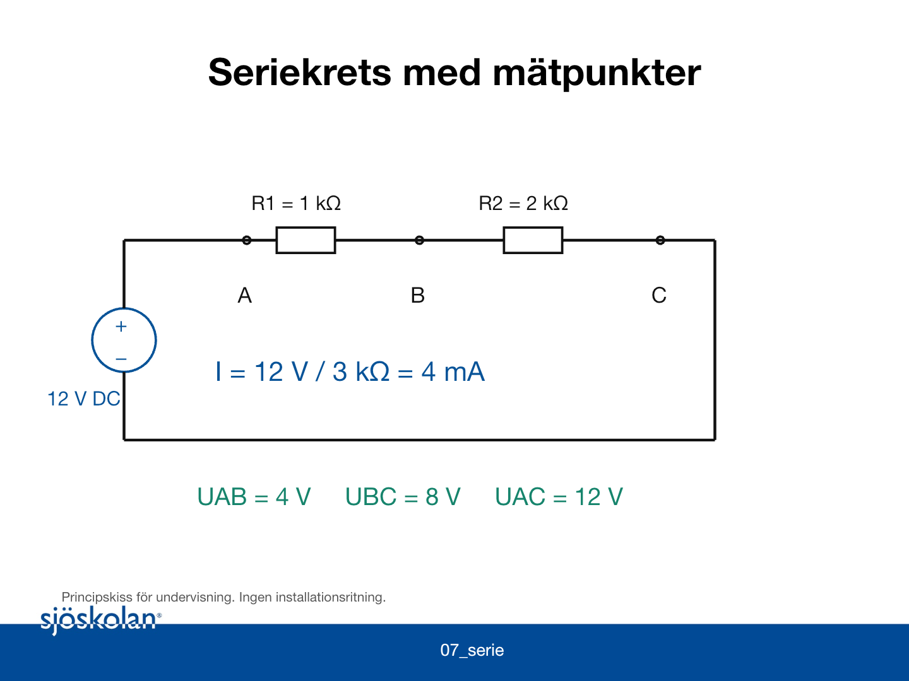
Utgå från 12 V, R1 1 kΩ och R2 2 kΩ. Total resistans är 3 kΩ. Därför blir strömmen 4 mA. Spänningen fördelas med 4 V över R1 och 8 V över R2. A, B och C är mätpunkter.
Fråga: Vad blir spänningen mellan B och C?
Parallellkrets med två grenar
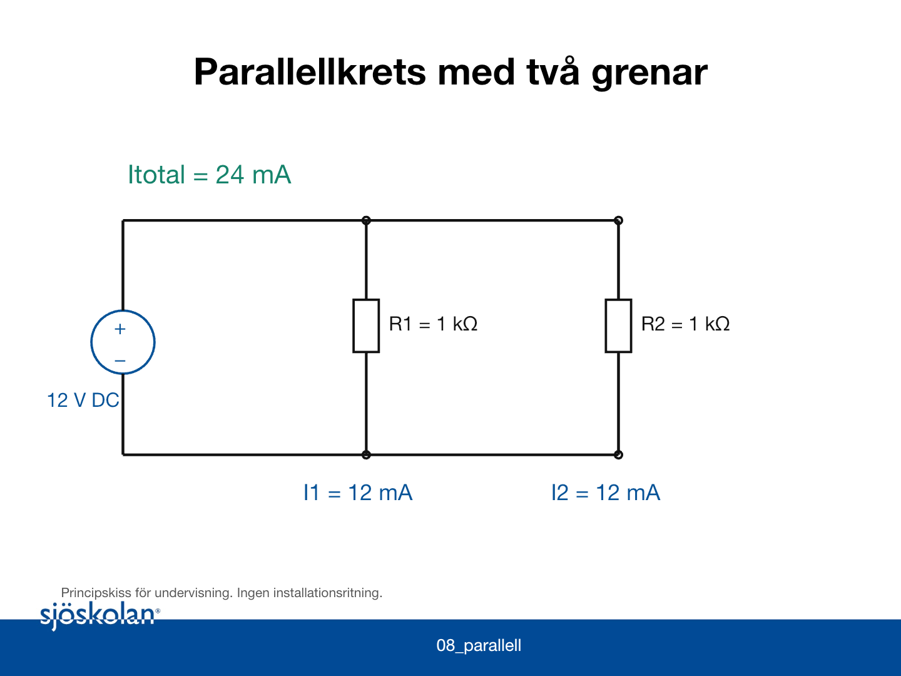
Båda grenarna ligger över samma 12 V. Varje 1 kΩ-gren drar 12 mA. Källan levererar summan, 24 mA. Ett avbrott i en enskild gren påverkar den andra annorlunda än ett avbrott i den gemensamma returen.
Fråga: Vad blir ersättningsresistansen?
Spänningsdelare med ansluten last
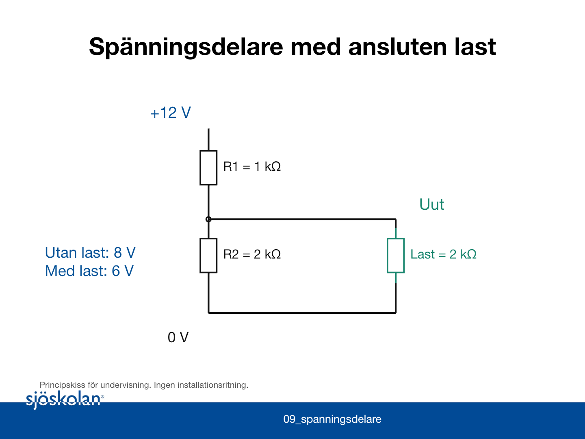
Utan last blir utspänningen 8 V. När en last på 2 kΩ kopplas parallellt med R2 blir den nedre ersättningsresistansen 1 kΩ. Utspänningen blir då 6 V. En spänningsdelare är lastkänslig.
Fråga: Varför sjunker utspänningen när lasten ansluts?
Spänningsfallet visar felregionen
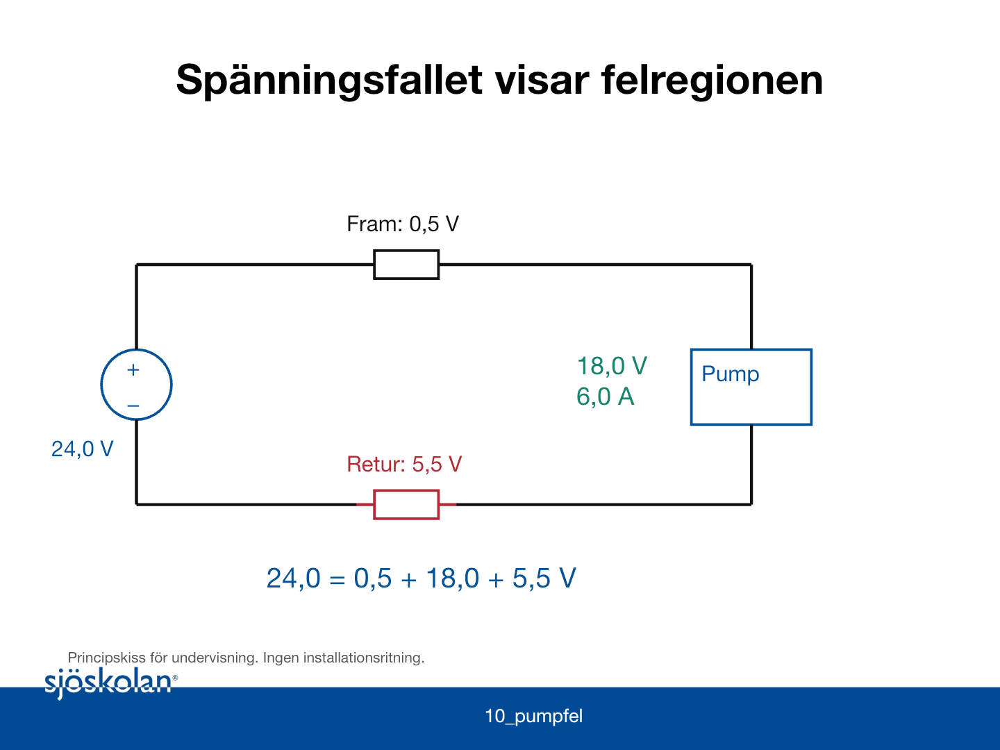
Mätvärdena gäller samtidigt under last. 24 V minus 0,5 V minus 5,5 V lämnar 18 V över pumpen. Huvuddelen av förlusten ligger i returen. Det pekar på en region, inte på en bestämd komponent.
Fråga: Vilken mätning skiljer en dålig returanslutning från en dålig kabel?
Sinus, period och effektivvärde
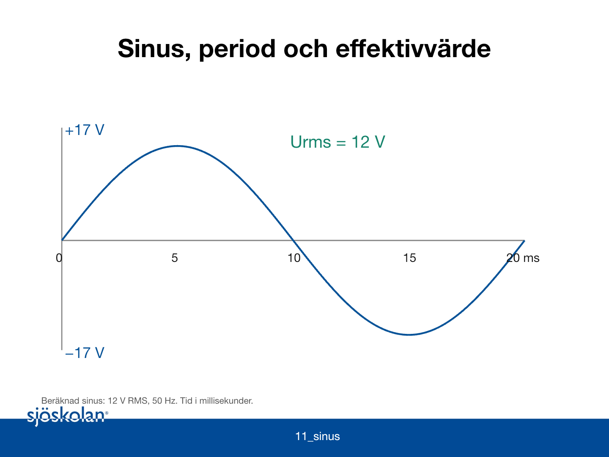
Kurvan visar en sinus med 12 V effektivvärde och 50 Hz. Toppvärdet är ungefär 17 V. En period tar 20 ms. Effektivvärdet är inte kurvans tidsmedelvärde, som är noll för denna symmetriska sinus.
Fråga: Vilket toppvärde får 230 V effektivvärde?
Trefas med 120 graders förskjutning
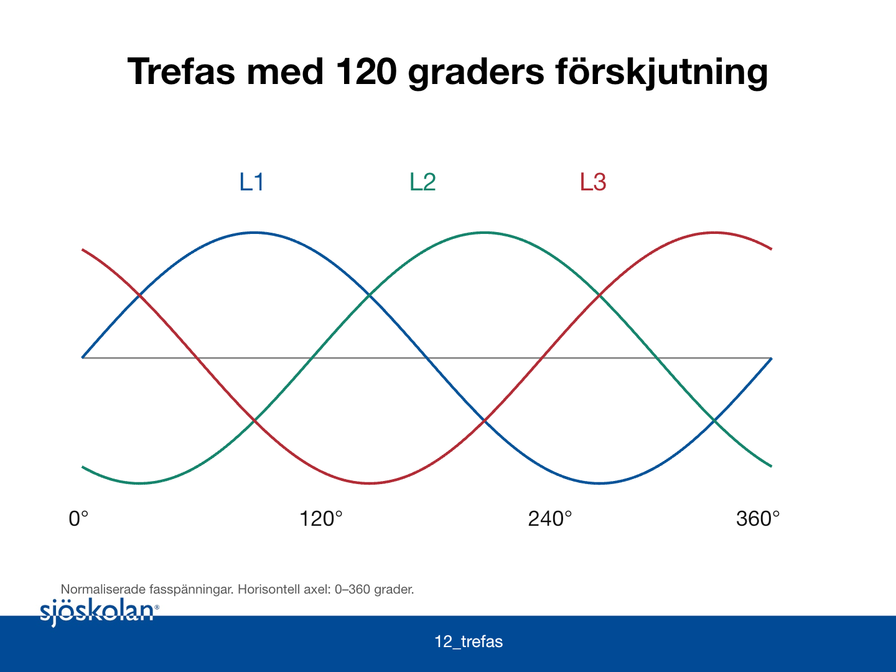
Tre lika stora sinusspänningar är förskjutna en tredjedels period. Figuren visar fasspänningar med samma referens. Linjespänningen är skillnaden mellan två fasspänningar och är inte summan av deras belopp.
Fråga: Hur stor del av en period är 120 grader?
Lindningsspänning i Y och Δ
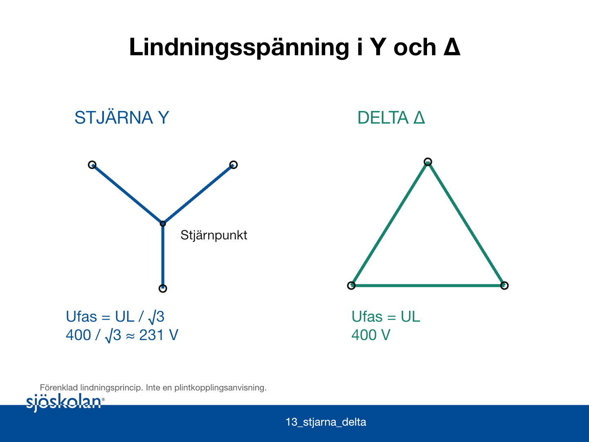
Vid Y möts lindningarna i en gemensam stjärnpunkt. Vid Δ bildar lindningarna en sluten triangel. För symmetrisk matning med 400 V mellan linjer får Y-lindningen cirka 231 V och Δ-lindningen 400 V.
Fråga: Hur kopplas en motor märkt 230/400 V Δ/Y vid 400 V?
Aktiv, reaktiv och skenbar effekt
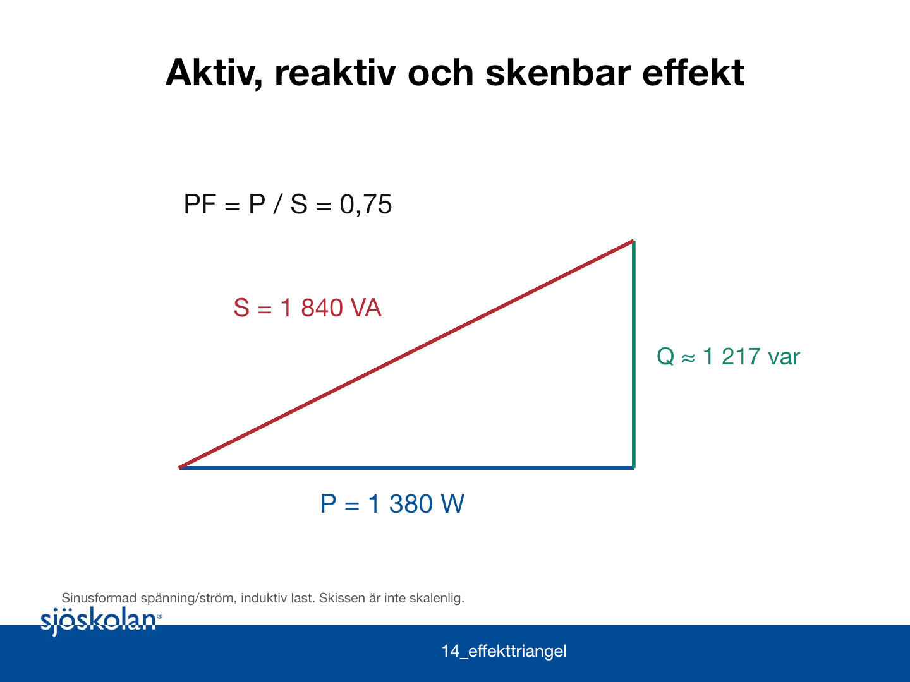
Här gäller sinus och en induktiv enfaslast. Med 230 V, 8 A och PF 0,75 blir S 1840 VA och P 1380 W. Reaktiv effekt blir cirka 1217 var. Triangeln är en matematisk relation med dessa villkor.
Fråga: Är effektfaktor samma sak som verkningsgrad?
Från uppgift till verifierat avslut
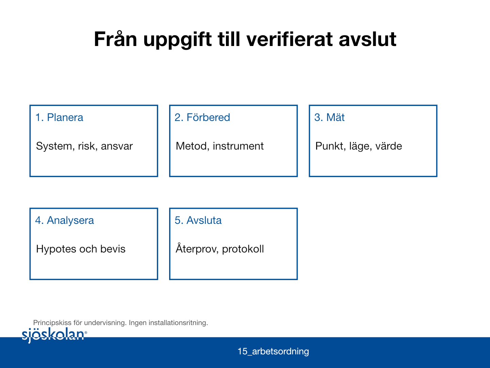
Följ processen i ordning. Varje ruta har en kontrollfråga. Om säkerheten inte kan fastställas stannar processen. Slutsteget är mer än att lasten fungerar: dokumentation och återställning ska också vara klara.
Fråga: När ska processen avbrytas?
Huvudkraft och separat nödkraft
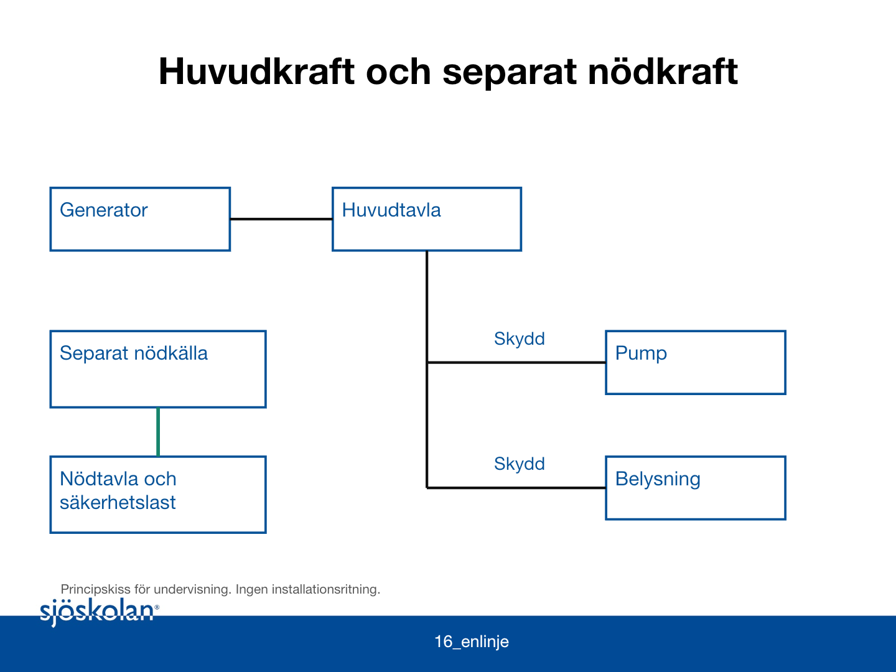
Det förenklade enlinjeschemat visar huvudkraft och en separat nödkraftskedja. Följ källa, skydd och last. En ledning i enlinjeschemat kan representera flera verkliga ledare. Den exakta nödkraftslösningen måste alltid läsas i fartygets underlag.
Fråga: Vilken gemensam händelse måste konstruktionen motverka?
Motorns energi och förluster
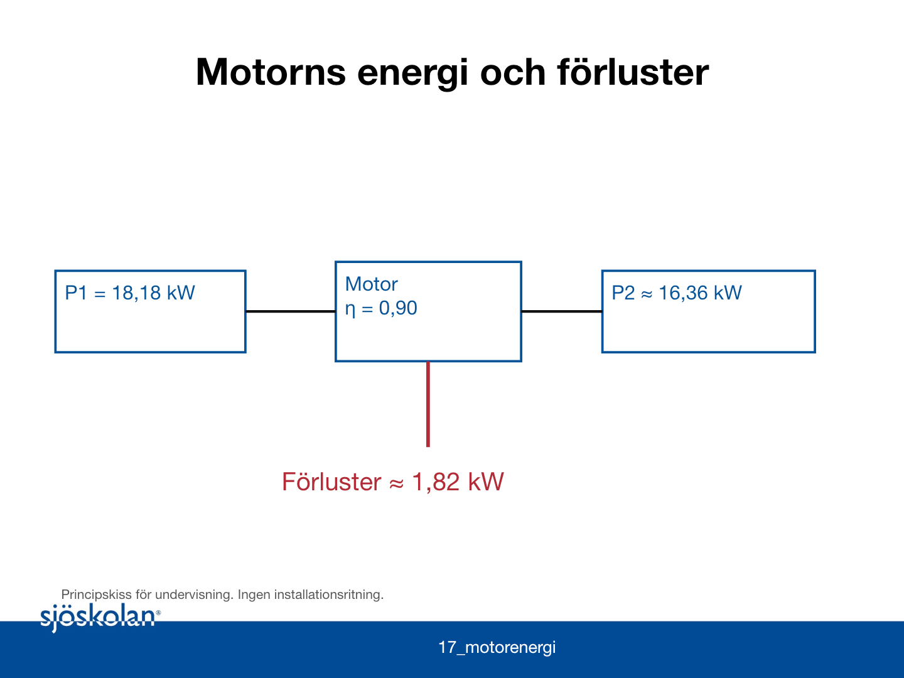
Tillförd aktiv effekt delas i nyttig mekanisk effekt och förluster. Med 18,18 kW in och 90 procent verkningsgrad blir uteffekten 16,36 kW och förlusterna cirka 1,82 kW. Effektfaktor ingår tidigare när aktiv ineffekt bestäms.
Fråga: Vad måste undersökas om strömmen är hög men pumpflödet lågt?
Transformatorns princip
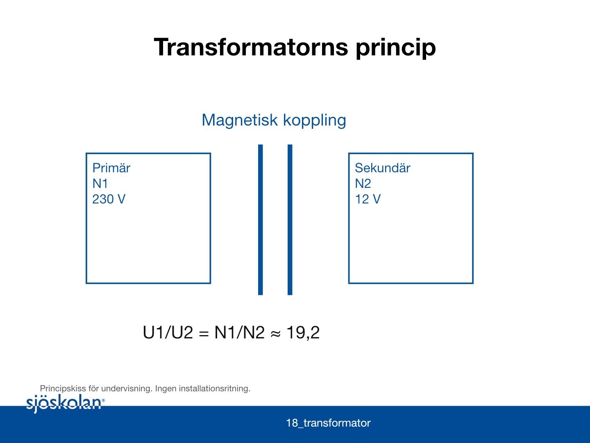
Primär- och sekundärlindning delar magnetiskt flöde. Den ideala spänningskvoten är lika med lindningsvarvkvoten. Figuren visar separata lindningar, men den säger inte att en okänd transformator har de skyddsegenskaper som SELV kräver.
Fråga: Är varje transformator en säkerhetsisolerande källa?
Selektivitet begränsar avbrottet
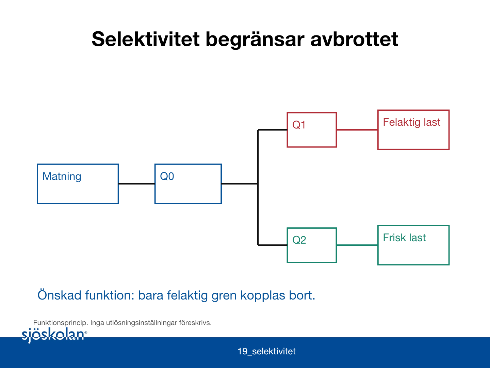
Q0 är överordnat skydd och Q1/Q2 skyddar två grenar. Ett fel i grenen efter Q1 bör hanteras så att den andra grenen kan fungera. Detta kräver samordningsdata. Olika märkströmmar räcker inte som bevis.
Fråga: Vad behövs för att visa selektivitet?
Observation, hypotes och slutsats
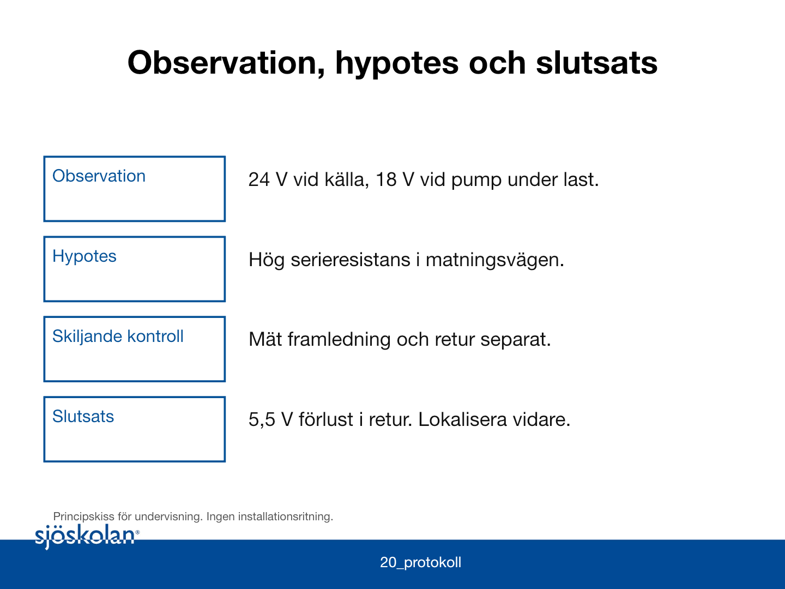
Håll isär det som har observerats och det som föreslås som förklaring. Ett bra protokoll går att förstå utan muntliga tillägg. Uppgiften visar kvaliteten i resonemanget, inte bara fina tabellkanter.
Fråga: Vad saknas om rapporten bara säger ”pumpen är trasig”?
Hållkrets: Vila
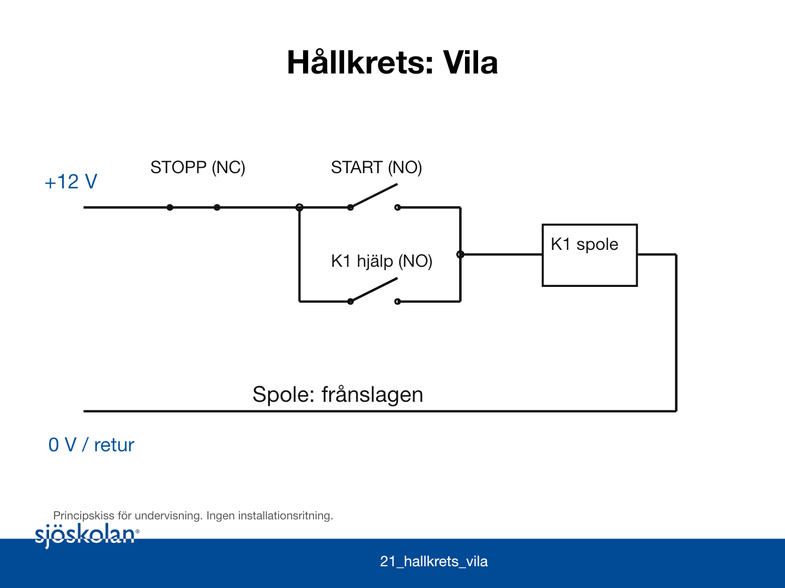
Följ strömvägen från plus genom STOPP och sedan genom START eller hjälpkontakten till K1-spolen och tillbaka till 0 V. I vila är STOPP sluten, START och hjälpkontakten öppna. Spolen saknar ström.
Fråga: Varför håller kretsen efter att START släppts?
Hållkrets: START intryckt
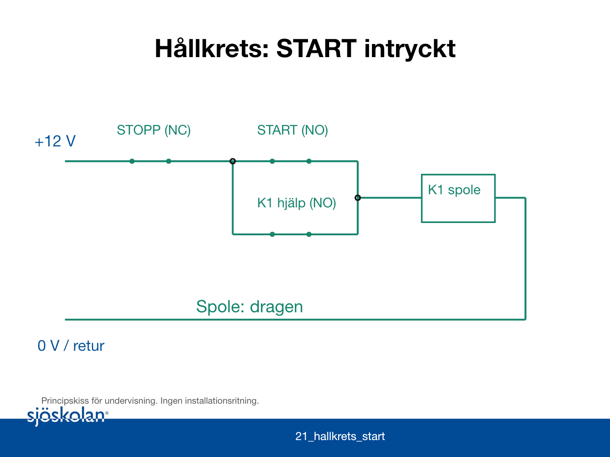
Följ strömvägen från plus genom STOPP och sedan genom START eller hjälpkontakten till K1-spolen och tillbaka till 0 V. När START trycks in drar K1. Hjälpkontakten sluter också.
Fråga: Varför håller kretsen efter att START släppts?
Hållkrets: Hållning
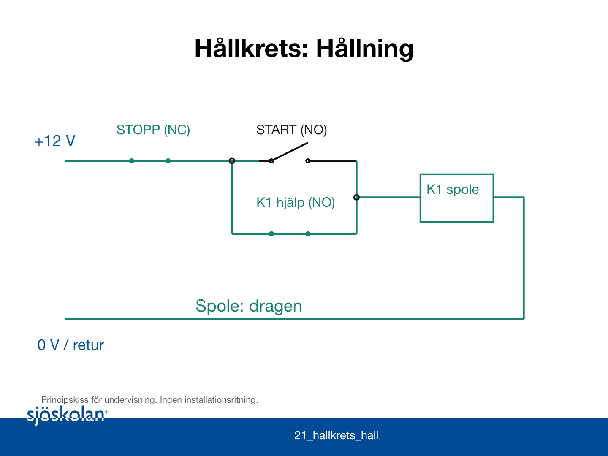
Följ strömvägen från plus genom STOPP och sedan genom START eller hjälpkontakten till K1-spolen och tillbaka till 0 V. När START släpps fortsätter strömmen genom K1:s hjälpkontakt.
Fråga: Varför håller kretsen efter att START släppts?
Hållkrets: STOPP intryckt
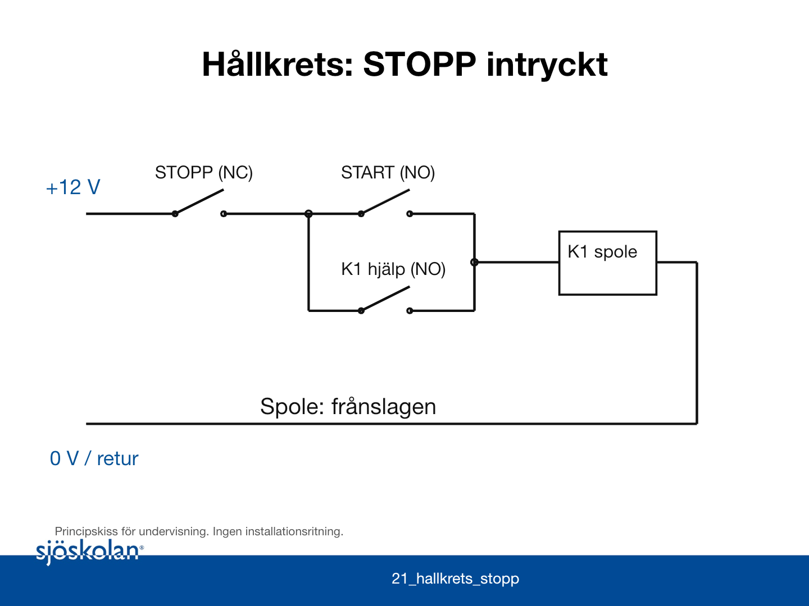
Följ strömvägen från plus genom STOPP och sedan genom START eller hjälpkontakten till K1-spolen och tillbaka till 0 V. När STOPP trycks in bryts strömvägen. Spolen släpper och hjälpkontakten öppnar.
Fråga: Vad händer när STOPP släpps igen?
Fel: hållvägen är bruten
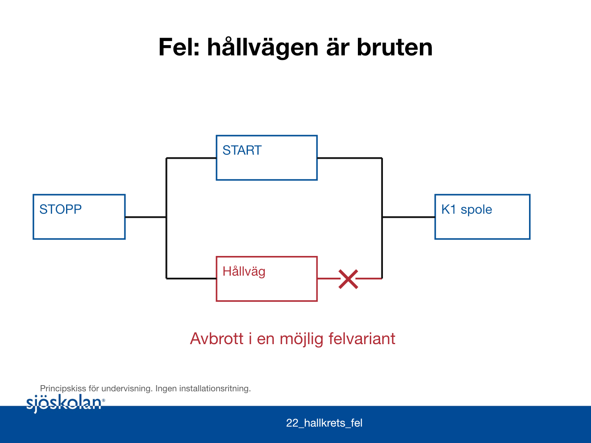
K1 drar när START hålls inne men släpper när START släpps. Matningen är stabil. Jämför de två parallella vägarna med de friska tillståndsbilderna. Den markerade felregionen är en undervisningsvariant.
Fråga: Vilken kontroll kan pröva hypotesen om bruten hållväg?
Mätdata som skiljer felorsaker
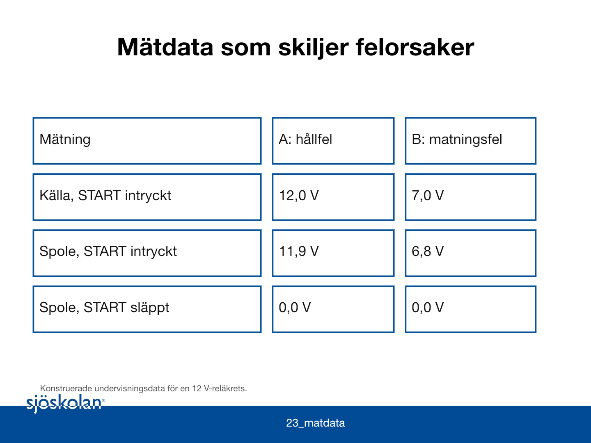
Använd tabellen som ett distansfall. Alla värden är konstruerade. Vid hållfel är matningen stabil men spolen tappar spänning efter att START släppts. Vid matningsfel sjunker både matningen och spolspänningen under start. Det är olika hypoteser.
Fråga: Vilken variant talar främst för matningsproblem?
IP och EX beskriver olika egenskaper
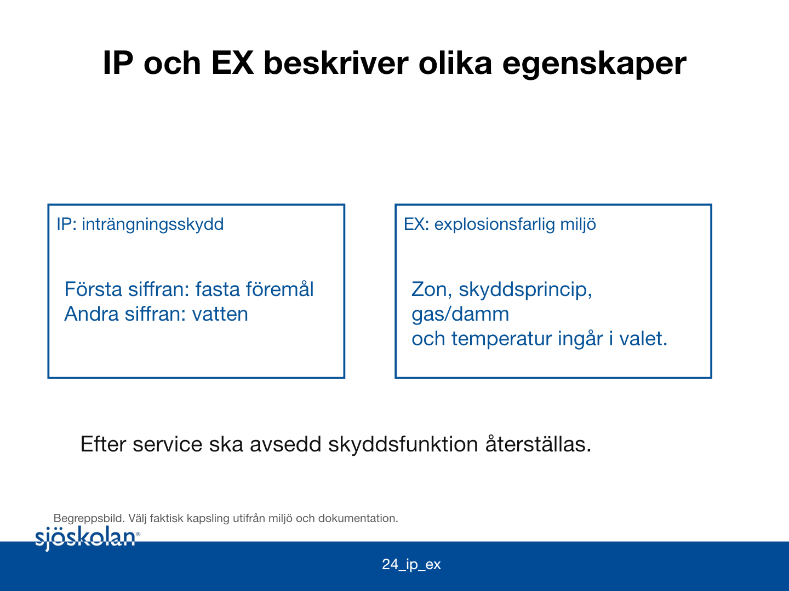
IP anger inträngningsskydd och EX avser lämplighet i explosionsfarlig miljö med flera villkor. Varken en hög IP-siffra eller en snygg kapsling räcker som generell installationsbedömning. Figuren ersätter fysisk komponentvisning i distanspasset.
Fråga: Vad granskar du efter att en kapsling har öppnats?